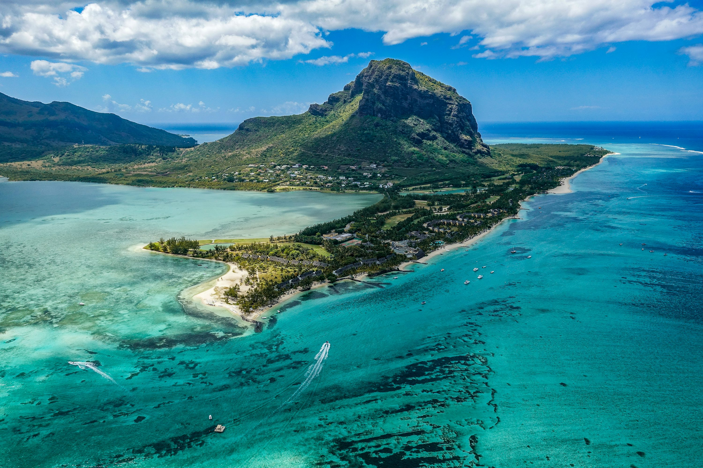
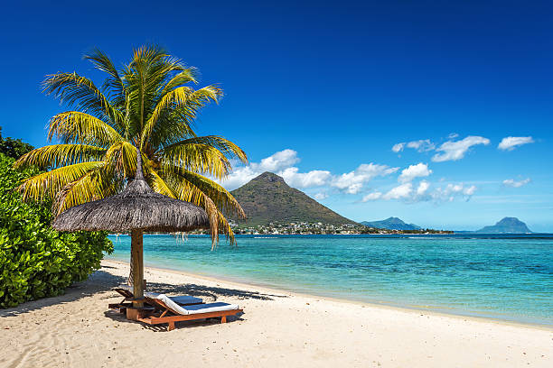
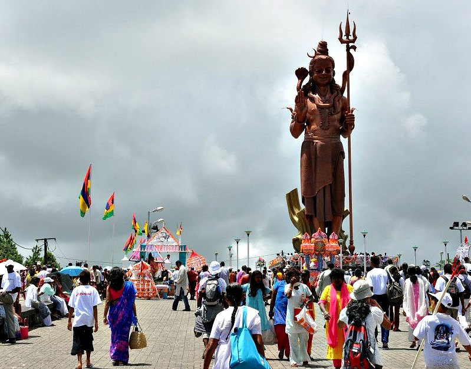

मॉरीशस, जो भारत की तरह ही है, भूमध्य रेखा से लगभग 20 डिग्री दक्षिण में और 60वें देशांतर के बहुत करीब, लेकिन पश्चिम की ओर स्थित है। मॉरीशस की लंबाई 29 मील और चौड़ाई लगभग 30 मील है। पूरे मॉरीशस का क्षेत्रफल 720 वर्ग मील माना जाता है। यह द्वीप हिंद महासागर का सबसे खूबसूरत मोती है। मॉरीशस एक ऐसा देश है जिसका कोई भी हिस्सा समुद्र से पंद्रह मील से ज़्यादा दूर नहीं है। मॉरीशस एक ऐसा देश है जहां 67 प्रतिशत आबादी भारतीय मूल की है और जहां 53 प्रतिशत लोग हिंदू हैं। मॉरीशस एक ऐसा देश है जिसकी राजधानी पोर्ट लुइस में कलकत्ता, मद्रास, हैदराबाद और बॉम्बे के नाम वाली सड़कें हैं और इसके एक पूरे मोहल्ले का नाम काशी है। मॉरीशस एक ऐसा देश है जहाँ माध्यमिक विद्यालयों को कॉलेज कहने की परंपरा है। क्योंकि मॉरीशस में ज़्यादातर हिंदू बिहार और उत्तर प्रदेश से हैं, हिंदी व्यापक रूप से बोली जाती है। मॉरीशस की सांस्कृतिक भाषा फ्रेंच है। लेकिन वहां के लोग क्रियोल बोलते हैं। क्रियोल का फ्रेंच से वैसा ही संबंध है जैसा भोजपुरी और हिंदी का है।
 
मॉरीशस के हर बड़े गांव में एक शिव मंदिर है। मॉरीशस के हर बड़े गांव में हिंदू, रामायण का पाठ करते हैं या ढोलक और झांझ बजाकर इसे गाते हैं। मॉरीशस में भारतीय त्यौहार भी लोकप्रिय हैं। लेकिन साल का सबसे लोकप्रिय धार्मिक त्यौहार शिवरात्रि है। मॉरीशस के बीच में एक झील है, जिसे हिंदुओं ने परियों से जोड़ा है और झील का नाम अब 'परी तालाब' हो गया है। शिवरात्रि के दौरान, पूरे मॉरीशस से हिंदू सफेद कपड़े पहनकर और कंधों पर कांवड़ लेकर परी तालाब आते हैं। सरोवर से जल भरकर वे शिव मंदिरों में वापस आते हैं और भगवान शिव को जल चढ़ाकर अपने घरों में प्रवेश करते हैं। ये सभी कार्य वे बड़ी श्रद्धा से करते हैं। इस दौरान वे सभी गांधी टोपी पहनते हैं। परी तालाब में आयोजित यह मेला मॉरीशस के प्रमुख आकर्षणों में से एक है और इसे देखने के लिए अन्य धर्मों के लोग भी बड़ी संख्या में आते हैं।

Link to starting webpage
starting page